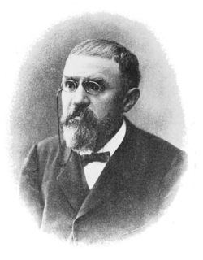

1854-1912
Henri Poincare

Portrait: Unknown authorUnknown author, Public domain, Wikimedia Commons.
Events (6)
- 1880Dynamical systems from celestial mechanics (Poincare to Birkhoff)
originator · Dynamics
- 1881Automorphic functions and uniformisation
developer · Number theory
- 1882Combinatorial group theory
developer · Group & representation theory
- 1895Algebraic topology: Betti numbers to homology groups
originator · Algebraic topology
- 1906Lorentz group and Minkowski spacetime: group theory enters physics
developer · Differential geometry
- 1942Homological algebra
originator · Algebra